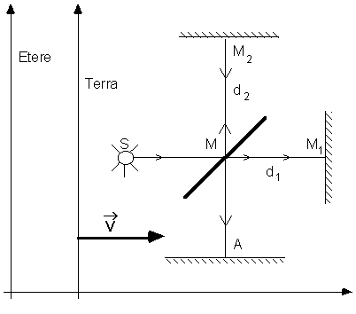

Desh24 ago 2008, 18:50
3. Un interferometro di Michelson è composto da una sorgente di luce coerente C,da uno specchio semiriflettente R, da due specchi piani S1, S2, e da uno schermo
P, come in figura.

la figura non è la stessa, ma è sostanzialmente identica
La luce, di lunghezza d’onda $ \lambda=500 nm $, si propaga verso lo specchio R, dove si divide in due fasci; il primo percorre la distanza $ L_1 = 1.01m $ verso lo specchio S2, e il secondo la distanza $ L_2 = 0.99m $ verso lo specchio S2.
Tornando sullo specchio R, parte dei due fasci si riuniscono e si sovrappongono sullo schermo P, formando una figura di interferenza circolare. Le distanze CR e RP sono ambedue pari a 1 m.
(a) A quali distanze dal centro della figura sullo schermo si dispongono i massimi e i minimi di interferenza? Si usi la formula $ \cos(\theta)=1-\frac{\theta^2}{2} $ valida per piccoli angoli $ \theta $.
(b) Sia $ d = L_1 - L_2 $. Come si muovono i massimi di interferenza variando d? In particolare cosa succede per $ d<<\lambda $?
(c) Si vogliono verificare due ipotesi alternative. (1) La velocità della luce c è la stessa in tutti i sistemi di riferimento. (2) La velocità della luce è c nel sistema dell’etere e si compone additivamente nel passaggio ad altri sistemi di riferimento. Assumendo che la Terra si muova rispetto all’etere ad una velocità $ v = 30\frac{km}{s} $ nella direzione di $ L_1 $, si calcoli la differenza fra la posizione del primo e del secondo massimo circolare nelle due ipotesi. Si usino le formule $ $ \sqrt{1-x}=1-\frac{x}{2}, \frac{1}{1-x}=1+x $, valide per piccoli x. Velocità della luce $ [tex] $$ c = 3 \cdot 10^8\frac{m}{s}.
già postato, ma senza soluzione e scritto maluccio: viewtopic.php?t=9147